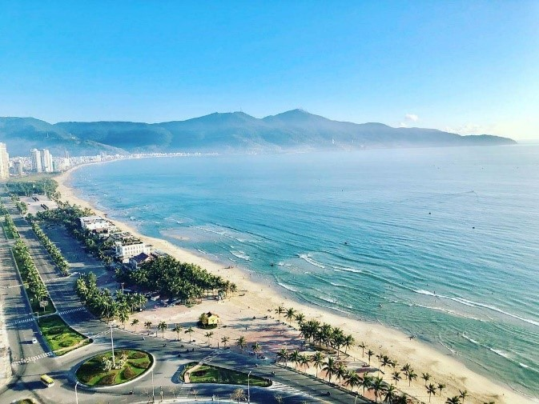

|
|
| Giá vé | Du lịch | Ẩm thực | Văn hóa | Giới thiệu |
Du lịch Đà Nẵng
Cầu Rồng
|
- Cầu Rồng là biểu tượng nổi tiếng của thành phố Đà Nẵng. Cây cầu có thiết kế hình con rồng vàng vươn ra biển Đông, thể hiện sự phát triển và thịnh vượng của thành phố. Vào các tối cuối tuần, cầu còn có màn trình diễn phun lửa và phun nước rất ấn tượng, thu hút đông đảo du khách. -Màn trình diễn phun lửa và nước vào thứ 6 ,thứ7,Cn hằng tuần vào lúc 21h00 – 21h15 |
|
-Bà Nà Hills là khu du lịch nổi tiếng nằm trên núi Chúa, cách trung tâm Đà Nẵng khoảng 25 km. Nơi đây nổi tiếng với Cầu Vàng độc đáo, làng Pháp cổ kính và hệ thống cáp treo hiện đại. Du khách có thể tận hưởng khí hậu mát mẻ quanh năm và ngắm nhìn khung cảnh thiên nhiên tuyệt đẹp. |
Bà Nà Hills |
Ban Đảo Sơn Trà
|
-Bán đảo Sơn Trà được mệnh danh là "lá phổi xanh" của Đà Nẵng. Nơi đây sở hữu hệ sinh thái đa dạng cùng nhiều điểm tham quan nổi tiếng như chùa Linh Ứng và các điểm ngắm cảnh hướng ra biển. Sơn Trà là điểm đến lý tưởng cho những ai yêu thích thiên nhiên và khám phá. |
|
-Đến với Mỹ Khê, du khách có thể tắm biển, ngắm bình minh, tham gia các hoạt động thể thao dưới nước hoặc đơn giản là thư giãn trong không gian biển thoáng đãng. Bãi biển còn nằm gần trung tâm thành phố nên rất thuận tiện cho việc tham quan và nghỉ dưỡng. -Mỹ Khê không chỉ là điểm đến hấp dẫn của Đà Nẵng mà còn được nhiều du khách trong và ngoài nước yêu thích bởi vẻ đẹp tự nhiên và môi trường sạch đẹp. |
Bãi biển Mỹ Khê |
|
Copyright by Mai Contact: tuyetmai121119@gmail.com |